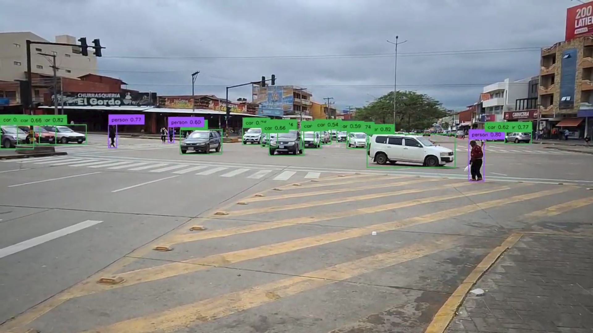

Computer Vision
Computer Vision enables machines to interpret and understand visual information from the world, powering applications from autonomous vehicles to medical imaging. This course covers the complete spectrum of computer vision techniques, from classical image processing to state-of-the-art deep learning approaches. Students will master image classification, object detection, segmentation, and 3D vision while working with real-world datasets and industry-standard tools. The course emphasizes practical implementation using OpenCV, TensorFlow, and PyTorch, preparing students to develop vision systems for robotics, surveillance, healthcare, and augmented reality applications.
Learning Objectives
- Understand fundamentals of image formation and digital image processing
- Master classical computer vision techniques: edge detection, feature extraction, and matching
- Implement CNNs for image classification and recognition tasks
- Develop object detection systems using YOLO, R-CNN, and SSD
- Build semantic and instance segmentation models
- Apply 3D vision techniques: stereo vision, depth estimation, and SLAM
- Process real-time video streams for tracking and activity recognition
- Deploy computer vision models on edge devices and cloud platforms
Course Outline
-
Image Processing Fundamentals:
- Image formation and camera models
- Filtering and convolution operations
- Edge detection: Sobel, Canny
- Feature detection: SIFT, SURF, ORB
- CNN architectures for image classification
- Transfer learning with pre-trained models
- Data augmentation techniques
- Model optimization and deployment
- Object detection: YOLO, Faster R-CNN, SSD
- Semantic segmentation: FCN, U-Net, DeepLab
- Instance segmentation: Mask R-CNN
- Panoptic segmentation
- 3D vision and depth estimation
- Optical flow and video analysis
- Face recognition and biometrics
- Medical image analysis
- Vision transformers and attention mechanisms
Deep Learning for Vision:
Object Detection and Segmentation:
Advanced Topics:

GPUs facilitate real-time image and video processing, as well as the training of Convolutional Neural Networks (CNNs) for tasks such as classification, object detection, and segmentation. Students will leverage GPU acceleration to process high-resolution images and 4K video streams in real-time, train complex vision models with millions of parameters, and deploy models for edge computing applications. With campus GPU infrastructure, learners can experiment with state-of-the-art architectures like Vision Transformers, implement real-time SLAM algorithms for robotics, and develop production-ready computer vision systems used in autonomous vehicles, medical diagnostics, and industrial automation.
Instructor
Computer Vision Instructor
Computer Vision and Image Processing Specialist